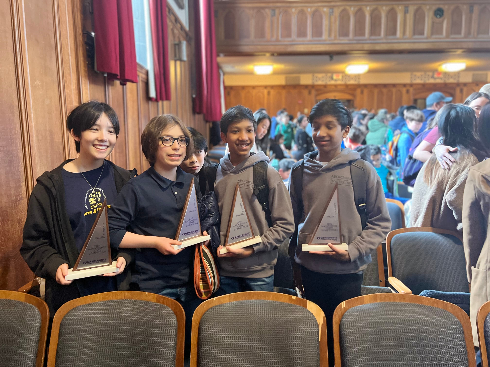
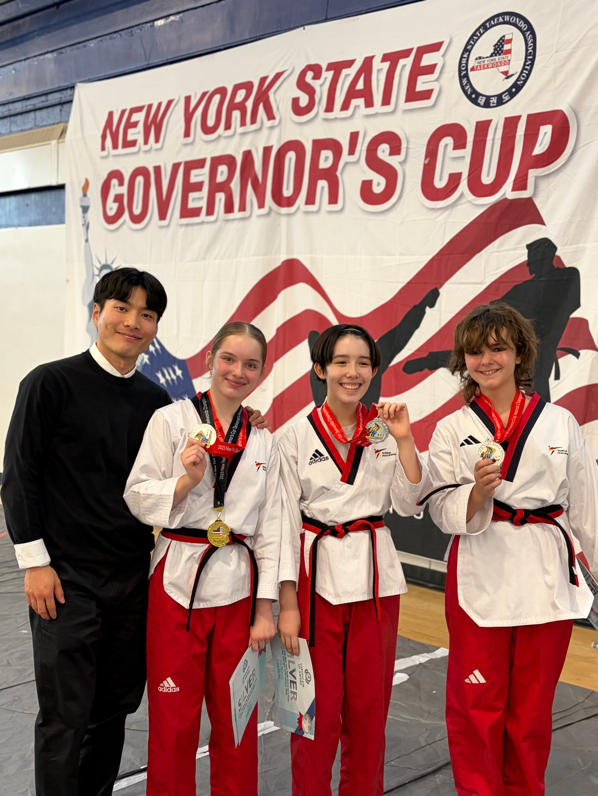
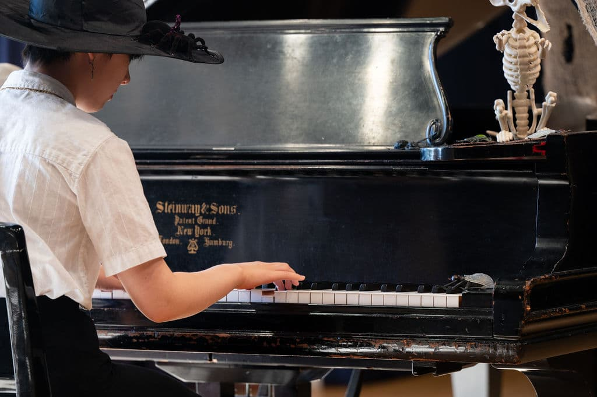
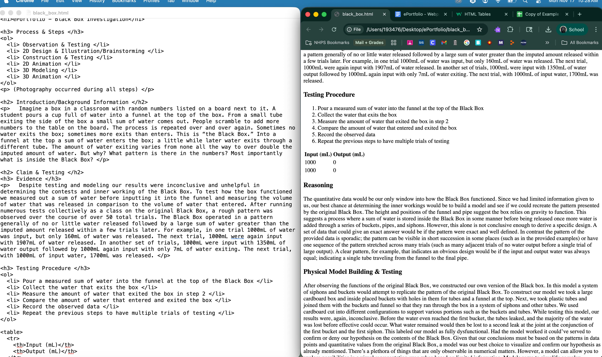
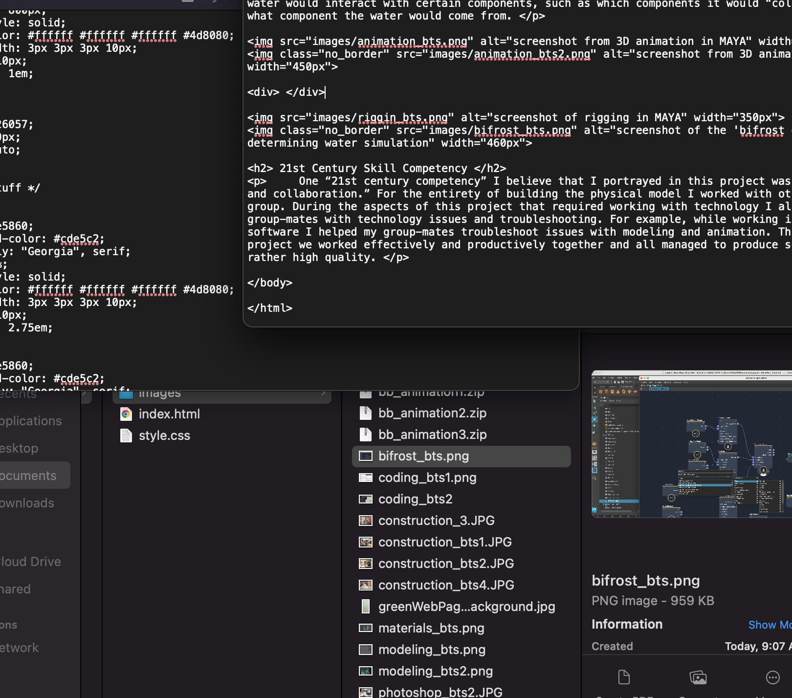
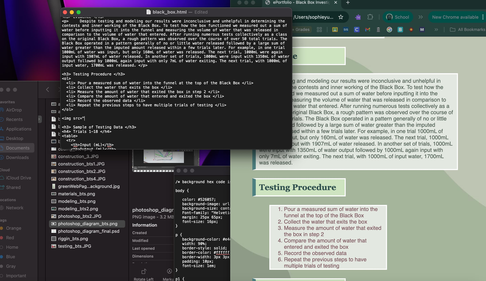

Highschool ePortfolio - About Page
About Me
My name is Sophie Yu; I am currently a freshman at ESUMS, Engineering Science University Magnet School, set to graduate June of 2029. My hobbies include Taekwondo, visual art, and, as nerdy as it is, coding.
Extracurriculars
Math Club / Math team
Starting in middle school (7th Grade), I've been an active part of ESUMS' math club and team. Through the math club I've competed in many math competitions and also done peer tutoring.
Math Competitions
- Mathcounts 2023-2024 - New Haven Chapter 4th Place Team
- Mathcon Spring 2024
- AMC8 Fall 2023
- Mathcounts 2024-2024 - New Haven Chapter 2nd Place Team & Connecticut State 4th Place Team
- Mathcon Spring 2024
- AMC8 Fall 2024
- GNHML (Greater New Haven Math League) 2025-2024
- AMC10 Fall 2025

FBLA - Future Business Leaders of America
Taekwondo
I've been training Taekwondo with the World Champion Taekwondo (WTC) company since 2023. I'm a 1st poom black belt (Underage 1st degree black belt) and a part of my school's Poomsae (Traditional Choreographed Form) and Demo (Short for demonstration performance) competitive teams and have competed in multiple Poomsae competitions and performed in multiple demonstrations.
Taekwondo Competitions & Demonstrations
- 2024 WTC Championship - Poomsae (Gold Medal)
- 2024 WTC Championship - Team Demonstration
- 2025 Connecticut State Championship USATKD - Grassroots Poomsae Girls Cadet Red-belt (Gold Medal)
- 2025 ATU (American Taekwondo United) National Championship - Grassroots Poomsae Girls Cadet Red-belt (Bronze Medal)
- 2025 New York State Governor's Cup - World Class Sport Poomsae Girls Cadet (11th Place)
- 2025 New York State Governor's Cup - World Class Sport Poomsae Girls Cadet Team (Silver Medal)
- 2025 WTC Championship - Poomsae (Gold Medal)
- 2025 WTC Championship - Team Demonstration (First Place)

Other Extracurriculars
- Classical Piano with Neighborhood Music School (NMS) since 2016
- Korean School

About Coding this ePortfolio
This website was coded entirely by me using the HTML and CSS coding website over the course of my high school experience from 9th grade through senior year. I started coding this website in my "New Media and Tech for Social Change" class in my freshman year; one additional resource was the website w3 schools.


